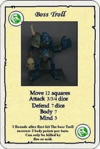

Boss Troll
by Azrael

Download the Boss Troll Monster Card (99K)
This monster is an ancient troll warrior who has survived centuries of combat
As such this creature should be used as a leader of a war party or object of a quest
He has 3 attacks all of which can be used in the same round
- Due to his age he regenerates slower than a normal troll but once
it starts it regenerates at a faster rate
- It regenerates wounds every turn after being wounded up to maximum body points
- Is best used as elite creature unless your heroes are very hard
- Can only be killed by fire or acid will continue to regenerate
until the final wound is caused by acid or fire.
The model for this monster is a GW bloodbowl troll circa 1992
Although most miniatures manufacturers have at least one troll in their range
This monster is for use in both versions of the game